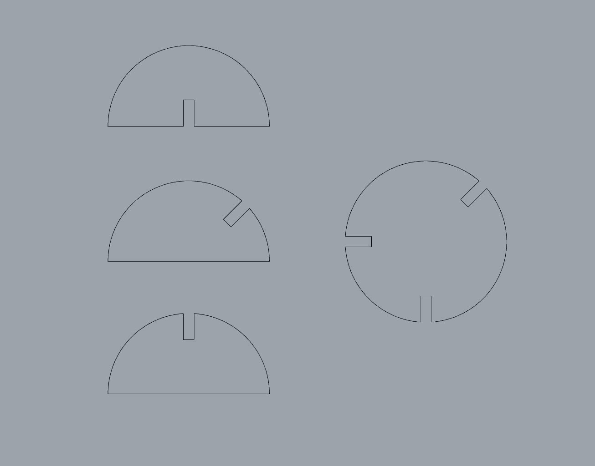

Week 5: 2D Scanning + Printing
Task: 3D Print something that could not be created through substractive methods
Skills used: Rhino 3D Modelling, Prusa 3D Printer, Metashape scanning software
For this assignment I was inspired by an MC Escher drawing entotle



For the final kit I expanded the number of pieces, creating in total 6 unique circles 9 unique semicircles. This allowed for the creation of a greater variety of forms. If I were to continue working on this exercise, I would experiment with the implications of having multiple different sizes of circles.